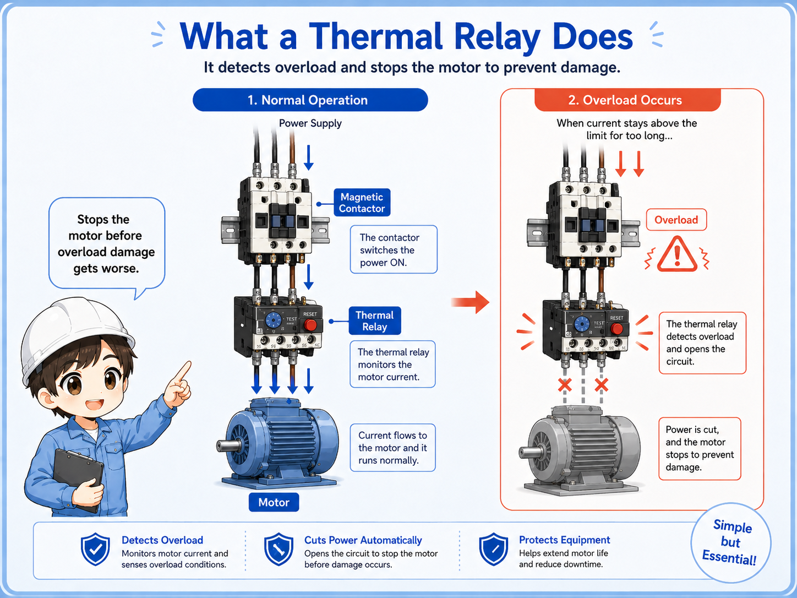
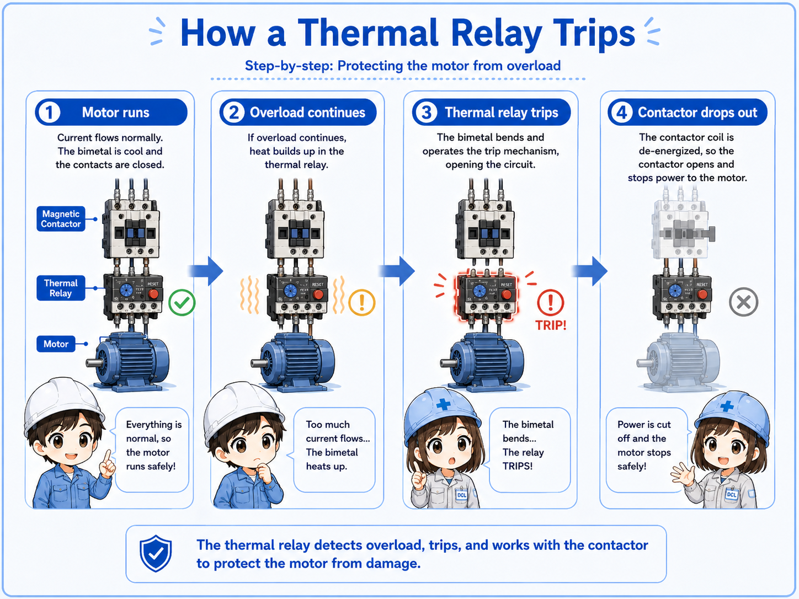
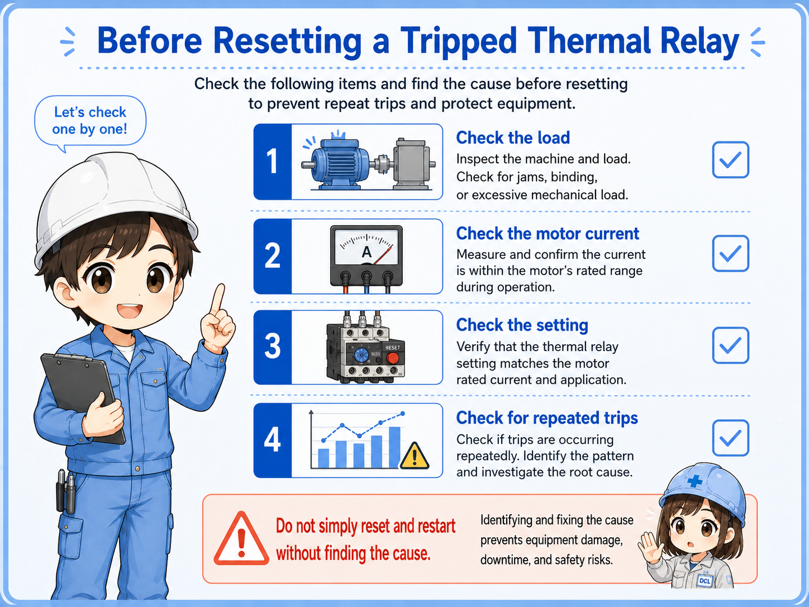

What is a thermal relay?
A thermal relay is a protective device that detects motor overload and helps stop the motor through the control circuit.
A motor can draw too much current when the load is heavy, the machine is jammed, a phase is missing, or the motor is not running normally. If that condition continues, the motor can overheat. A thermal relay is used to detect this overload condition and trip before damage becomes worse.
In many control panels, the thermal relay is mounted together with a magnetic contactor. The contactor switches motor power, and the thermal relay monitors the load current. When overload continues, the relay trips and its auxiliary contact opens the contactor coil circuit.

Think of it as motor overload protection
A thermal relay is not mainly for detecting a wiring short circuit. Short-circuit protection is usually handled by breakers or fuses. The thermal relay focuses on overload conditions that heat the motor over time.
How a thermal relay trips
The basic flow is current increase, heating, trip operation, and contactor coil interruption.
When the motor load becomes too heavy, motor current rises. If the overload continues, the internal thermal element or electronic detection circuit operates. Then the thermal relay changes its auxiliary contact state, usually opening the normally closed trip contact in the contactor control circuit.
1. Motor runs
The contactor is energized and motor current flows through the thermal relay.
2. Overload continues
The motor draws more current than expected for a sustained period.
3. Thermal relay trips
The overload detection mechanism operates and changes the auxiliary contact.
4. Contactor drops out
The control circuit opens, the contactor turns off, and the motor stops.

How it connects to the control circuit
In many motor circuits, the thermal relay contact is placed in series with the contactor coil circuit.
A common arrangement is to use the thermal relay's normally closed contact in the control circuit. During normal operation, this contact allows the contactor coil to stay energized. When the thermal relay trips, the contact opens, the coil turns off, and the main contactor opens.
The exact terminal numbers and contact names depend on the device. Many thermal overload relays have contacts used for trip interruption and alarm indication, but you should always confirm the actual terminal numbers in the manufacturer's manual.
| Part | Basic role | Field point |
|---|---|---|
| Magnetic contactor | Switches motor power on and off. | Check coil voltage, main contacts, and control signal. |
| Thermal relay | Detects motor overload and trips. | Check current setting, trip state, and reset method. |
| Control circuit | Holds or releases the contactor coil. | Check whether the thermal contact has opened the circuit. |

SeniorWhen a motor has stopped, do not look only at the contactor. Check whether the thermal relay has tripped and opened the coil circuit.

JuniorSo the contactor may be normal, but the thermal relay contact can still be preventing the coil from turning on.
Current setting and reset are not just formal steps
A thermal relay setting should match the motor and equipment conditions, not a guessed value.
Thermal relays often have an adjustable current setting range. The setting must be selected according to the motor nameplate, circuit design, load conditions, and the manufacturer's instructions. Do not copy another machine's setting without checking the actual motor and circuit.
Some models reset manually, while others can be set for automatic reset. In many field situations, manual reset is safer because it forces someone to check why the overload occurred before restarting the machine.
Do not simply reset and restart
If a thermal relay trips, the equipment is telling you that something may be wrong. Repeatedly resetting without checking the load, current, wiring, motor, and mechanical side can lead to repeated trips or damage.
Field checks before resetting a thermal relay
Before resetting, check both the electrical side and the mechanical load side.
When a thermal relay trips, the cause is not always the relay itself. The motor may be overloaded, the machine may be jammed, a bearing may be heavy, one phase may be abnormal, or the setting may not match the motor.

Check the load
Look for jams, heavy mechanical movement, stuck parts, or abnormal operating conditions.
Check the motor current
Measure current where appropriate and compare it with the motor rating and design conditions.
Check the setting
Confirm that the thermal relay setting matches the motor and the manufacturer's instructions.
Check for repeated trips
Repeated trips mean the cause has not been solved. Do not treat reset as the repair itself.
Always check the actual device manual
Terminal names, reset methods, setting ranges, trip classes, and auxiliary contacts differ by manufacturer and model. Use this article as a basic guide, and confirm the actual details in the official manual for the equipment you are working on.